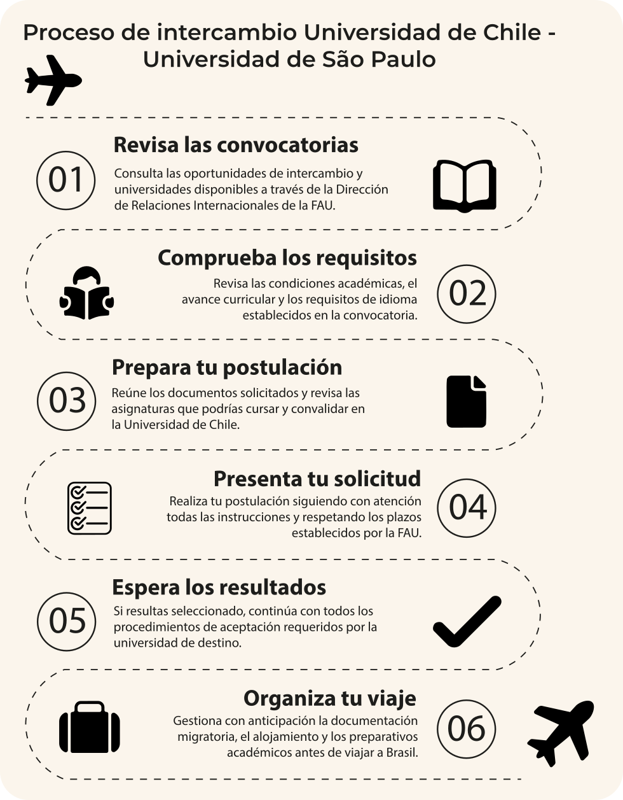

Intercambio
una experiencia en Brasil
desde la Universidad de Chile
Por Martina Casas y Rodrigo Albornoz
27 de noviembre, 2026
Las y los estudiantes de Diseño de la Universidad de Chile contamos con opciones de intercambio a instituciones tan relevantes como el Politécnico de Milán, la Universidad de Buenos Aires (UBA), la Universidad de São Paulo, la Universidad Nacional Autónoma de México (UNAM) y el Tecnológico de Monterrey.
Tales instituciones y la nuestra demuestran su relevancia apareciendo en las métricas del Ranking QS, un sistema londinense que opera en dos vertientes: QS World University Rankings, centrada en el desempeño institucional general, y QS World University Rankings by Subject, que en nuestro caso corresponde a Art and Design. En el panorama de educación superior actual, contar con presencia en ambas vertientes representa una ventaja sobre aquellos programas que no aparecen en las métricas de QS.
A continuación se presenta la información que debe considerar un/a estudiante de Diseño de la Universidad de Chile que tenga interés en realizar un intercambio académico en la Universidad de São Paulo (USP), Brasil. Para postular, es necesario cumplir con los requisitos establecidos por la Facultad de Arquitectura y Urbanismo (FAU), entre ellos ser estudiante regular, haber cursado al menos el tercer semestre de la carrera, contar con un promedio histórico mínimo de 4,5 y tener al menos 6 créditos susceptibles de ser convalidados. Además, se debe contar con el grado de Bachiller General al momento de iniciar la movilidad y acreditar conocimientos de portugués según las condiciones de la convocatoria.


Diferencia entre universidades de origen y destino
En su versión publicada el 18 de junio de 2026, son las instituciones que cuentan en el Ranking QS para Universidades.
Según tal ranking, un intercambio desde la Universidad de Chile a Universidad de São Paulo implica moverse entre los lugares y del mundo.
La diferencia de posiciones se explica cuando se consideran las siguientes dimensiones:
Este gráfico de radar representa en sus ejes las variables cuantitativas de las distintas dimensiones que definen el Ranking QS de Universidades. Donde se puede observar que la USP le gana a la U. de Chile en 7 de los 9 indicadores. Donde más se nota la diferencia es en sostenibilidad (+23), red de investigación internacional (+20) y citas por docente (+18). La U. de Chile solo se queda adelante en reputación entre empleadores y en internacionalización de docentes y estudiantes.
Diferencia entre escuelas de origen y destino
En su versión publicada el 25 de marzo de 2026, son las instituciones consideradas en el Ranking QS para el área de Arte y Diseño. Según este ranking, un intercambio desde Diseño de la Universidad de Chile a Universidad de São Paulo implica moverse entre los lugares y del mundo.
La diferencia de posiciones se explica cuando se consideran las siguientes dimensiones:
La Universidad de São Paulo supera a la Universidad de Chile en reputación académica (58,8 frente a 52,5), que pesa un 90% del puntaje, mientras que la Universidad de Chile queda adelante en reputación entre empleadores (78,5 frente a 73,2), que pesa solo un 10%. Como el primer indicador pesa mucho más, esa ventaja de USP explica gran parte de la distancia entre los lugares 175 y 96. Para Arte y Diseño, QS solo pondera estos dos indicadores, y por eso los otros tres ejes quedan en cero.
La escuela de Diseño en São Paulo
La Universidad de São Paulo cuenta con una formación en Diseño impartida por la Faculdad de Arquitetura e Urbanismo e de Design (FAU-USP). Su carrera aborda el diseño desde una perspectiva interdisciplinaria, incluyendo áreas como el diseño visual, de productos y de servicios. Su enfoque considera tanto las necesidades de las personas como los contextos sociales, culturales y ambientales en los que se desarrollan los proyectos. Para estudiantes de Diseño de la Universidad de Chile, esta institución representa una oportunidad de conocer otras perspectivas de la disciplina y ampliar su formación en un entorno académico internacional.


Estudiar en la Universidad de São Paulo representa una oportunidad para conocer nuevas formas de abordar el diseño, tanto desde lo académico como desde lo cultural. Su ubicación en una de las ciudades más grandes de América Latina permite entrar en contacto con diferentes expresiones visuales, espacios creativos y realidades sociales que pueden enriquecer la formación de un estudiante de intercambio.
Más allá de las diferencias entre universidades, esta experiencia permite ampliar la perspectiva sobre la disciplina, conocer otras metodologías de trabajo y desarrollar una mayor autonomía personal y académica.
Aspectos a tener en cuenta
- Idioma: La mayoría de las clases se imparten en portugués, por lo que es importante contar con conocimientos del idioma para participar en las actividades académicas.
- Asignaturas: Antes de viajar, es necesario revisar los cursos disponibles y preparar un plan de estudios que permita evaluar su posterior convalidación en la Universidad de Chile.
- Calendario académico: En Brasil, el año universitario comienza generalmente entre febrero y marzo. Es importante considerar estas fechas para organizar el intercambio.
- Alojamiento: La búsqueda de alojamiento es responsabilidad del estudiante, por lo que se recomienda investigar con anticipación las opciones disponibles en São Paulo.
- Vida universitaria: La USP cuenta con iniciativas de integración para estudiantes internacionales, que ofrecen orientación y apoyo para adaptarse a la universidad y a la ciudad.
Cómo postular a un intercambio
Como estudiante de Diseño de la Universidad de Chile, puedes optar por 2 vías para realizar un intercambio internacional presencial:
- Nivel Central (PME) : Gestionado de forma central por el Programa de Movilidad Estudiantil de la Dirección de Relaciones Internacionales para toda la universidad.
- Nivel FAU : Gestionado de manera independiente por la oficina de relaciones internacionales de cada unidad académica mediante convenios específicos.
La opción a nivel de FAU puede resultar más conveniente debido a la especificidad de sus convenios, con un enfoque de carácter directamente disciplinar, ajustándose mejor a las asignaturas, áreas de estudio y requerimientos de Diseño.
